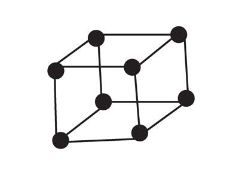
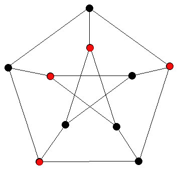

Discrete Mathematics @ VCU
Department of Mathematics and Applied Mathematics
Virginia Commonwealth University
Faculty |
Projects and Questions |
|
| Ghidewon Abay-Asmerom | ||
| Moa Apagodu | ||
| Neal Bushaw | ||
| Richard Hammack | ||
| Glenn Hurlbert |  | Graph Pebbling.
This project studies a network model for the transportation of consumable resources. As in most models, a supply of the resource (in this case, "pebbles") is placed on various vertices of the graph, and a demand of pebbles is identified at certain other vertices. In this model, the movement of a pebble across an edge requires the loss or payment of a partner pebble; that is, while two pebbles leave a vertex together, only one arrives at the other end of the edge, as the other pebble vanishes. The central question asks whether a given supply can satisfy a fixed demand, but many other significant questions exist. We study this paradigm on an array of special graph classes, seeking to discover when one can be successful in achieving assorted goals. This field is new enough to have numerous interesting problems within reach of talented undergraduate students, and there have been many strong contributions from students over the years. Students with some background in graph theory, discrete math, combinatorics, and/or computer programming are particularly well suited, but the essential concepts can be learned as needed. |
| Craig Larson |  | Independent Sets in Graphs. Larson has found various graph demompositions to illuminate the independence structure of a graph, together with algorithms to find these. What other decompositions can be found that will allow us to find maximum independent sets in graphs efficiently---at least for special graph classes? |
| Allison Moore | ||
| Nicola Tarasca | ||
| Dewey Taylor |